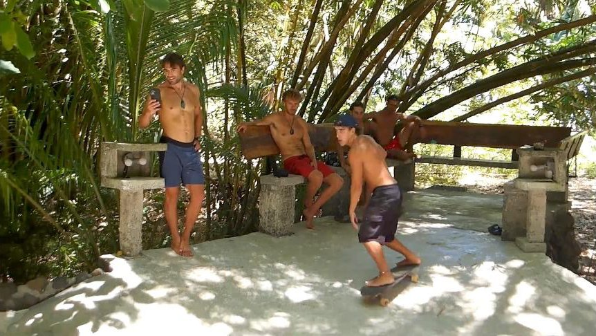

Qué es
El movimiento de la ola, sobre ruedas.
El surfskate copia el movimiento de la ola en el asfalto. Sirve para practicar giros y maniobras los días sin olas y llegar al agua con el movimiento aprendido.
Es muy importante para aprender a comprimir y descomprimir las piernas, mejorar el equilibrio, entender la posición de los pies y saber maniobrar en velocidad. Todo eso te lo da el skate, y lo podés llevar a tu tabla de surf.
Consultar por WhatsApp →Surfskate en acción
Los días sin olas, a la pista.
En la pista se trabajan la postura, el pumping y los giros, el mismo movimiento que después llevás a la ola.



¿Probamos sobre ruedas?
Escribime y coordinamos tu clase de surfskate.